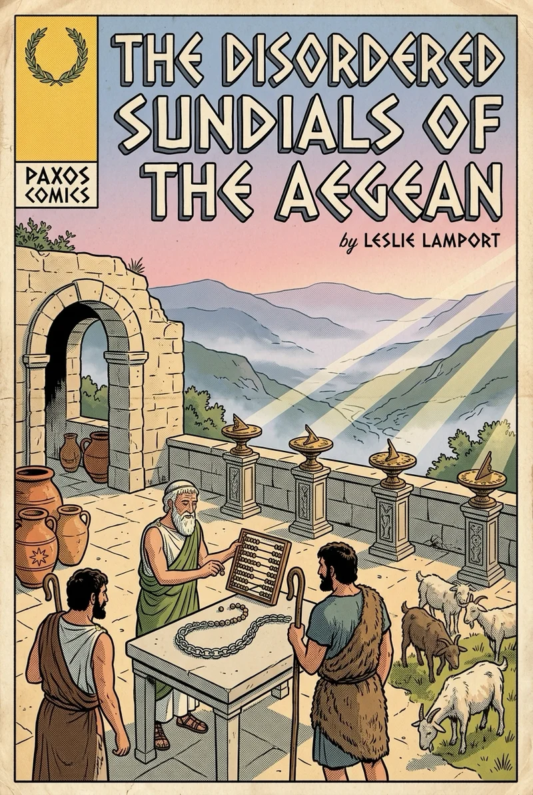
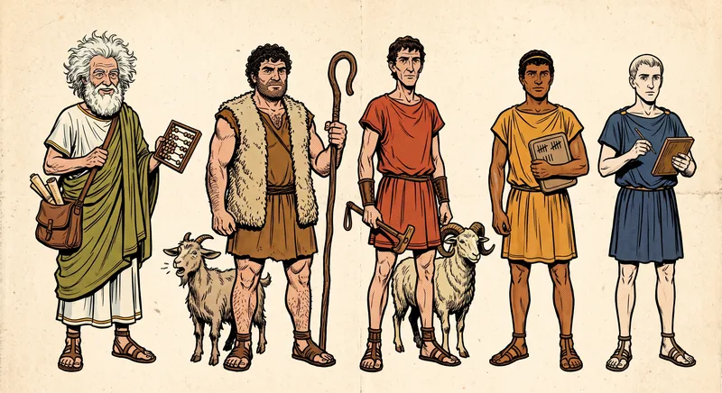
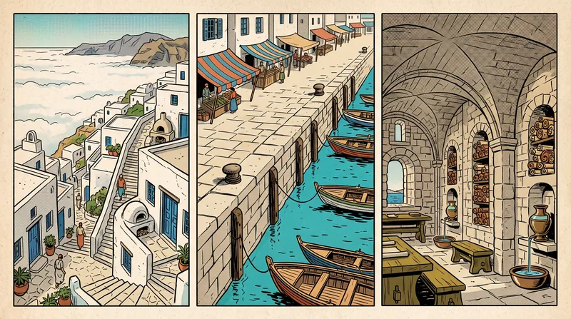
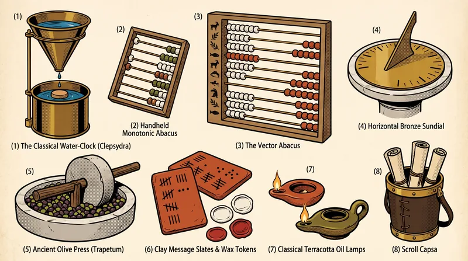
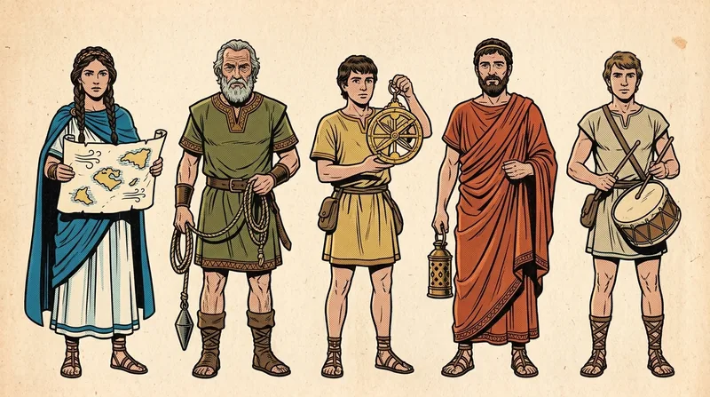
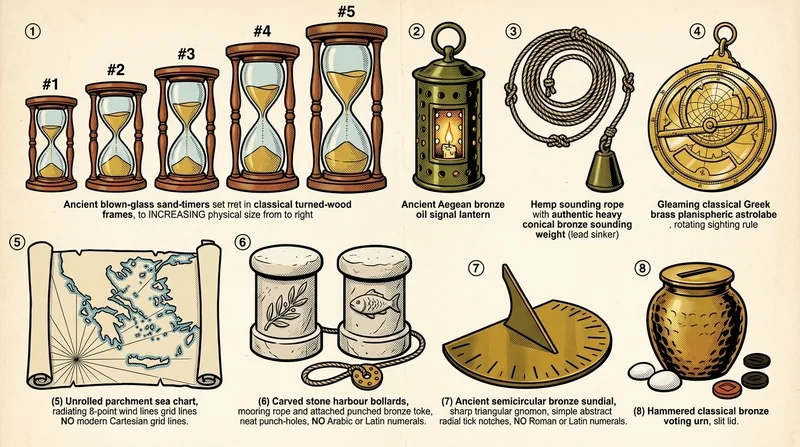
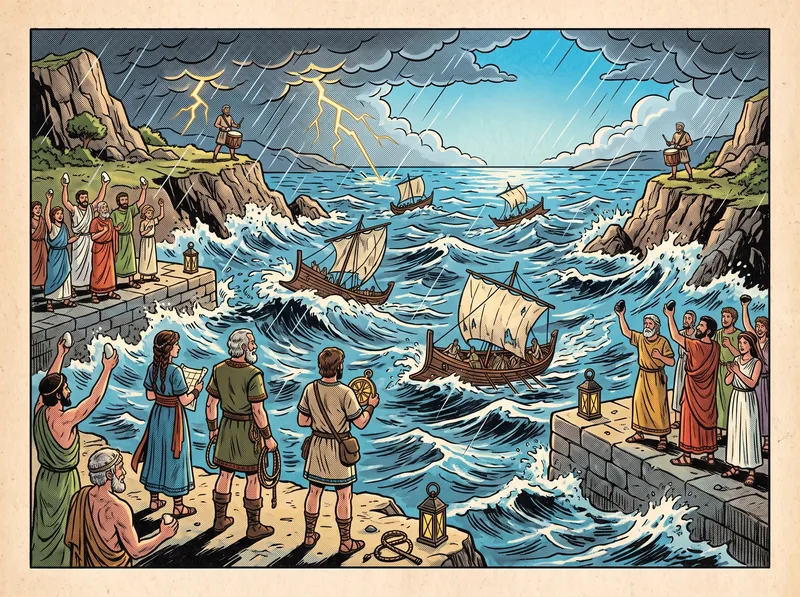

The Part-Time Parliament: Art Direction
This document sets the look of everything that recurs in Volume V: the Chamber, its priests and legislators, the messengers, the ledger and the small objects the protocol depends on. Every option that was considered is kept for the record and tied to the section of Lamport's paper it has to honour, but all 19 decisions are now locked: chosen options are marked locked, and rejected ones are greyed out and marked not chosen. Only locked options apply. The document describes what the images must show and the rules they must satisfy; how to prompt for them is left to the image team.
options, canon, decisions lockedClaude + you
4 highest-risk reference sheets (§12, Phase A)Gemini
check proofs against §1 and §2; amend this documentyou + Claude
the other 5
vol5_ref_* sheets (§12, Phase B)Gemini19 images (§13); relic code pass (D19)Gemini · Claude
R2 upload,
volume-5.html edits (D18)Claude + youLocked decisions
| # | Decision | Locked choice | § |
|---|---|---|---|
| D01 | Period stance | Lamport's pastiche: classical look plus only the objects the text names (parchment codex, iron-gall ink, glass hourglass) | 3 |
| D02 | Chamber form | The Great Round: full circle of tiers, ring wall, four barred gates | 4 |
| D03 | Centre across eras | Altar and brazier (Synod) → president's platform with backless stool (Parliament) | 4 |
| D04 | Why no speeches | Sea wind and distance; wind always from the seaward side | 4 |
| D05 | Island | Delos-type marble trading port | 5 |
| D06 | Priest costume | White linen chiton, coloured stole, olive fillet | 6 |
| D07 | Priest marks on objects | Coin-type emblems: Α dolphin · Β owl · Γ star · Δ tortoise · Ε horse | 6 |
| D08 | Casting by gender | Synod priests men; Parliament mixed | 6 |
| D09 | Messengers | Hired runner's kit (felt hat, short tunic, satchel, bronze hire-tag) | 6 |
| D10 | Frame figure | 1990 field archaeologist, frame panel only | 6 |
| D11 | Ledger | Parchment codex between leather-covered boards | 7 |
| D12 | Hourglass | Sea-green blown glass, black volcanic sand | 8 |
| D13 | Message types | Told apart by container shape; colour secondary | 9 |
| D14 | Ballot numbers | Notched bronze token stamped with owner's emblem | 9 |
| D15 | Presidency | Self-donned black sash with gold meander | 8 |
| D16 | Chapter IV panel | Ancient translation frieze; no modern objects | 13 |
| D17 | Cover | The Round at work | 11 |
| D18 | File names | New vol5_* stems; update volume-5.html + R2 at swap | 12 |
| D19 | Interactive relics | Full adoption: emblems replace letters in the relics' interface; message icons on chips and log lines (spec in §13) | 13 |
Open item (needed before the voting panel, not before the sheets)
The voting caption reads “Voted SCROLLS RACE BACK”, but D13 makes Voted a bronze token. Recommended: change the caption to “Voted TOKENS RACE BACK” (the paper never says scrolls). The alternative is to tie each token to a slim scroll, which weakens the shape coding.
Why Volume V gets a stricter pass
It's the paper that inspired the project and the centrepiece of the site. It's also the one volume
where the author wrote the allegory himself, in detail: many readers will know exactly how the Chamber, the ledgers and the
messengers are supposed to work. The quality audit (image-quality-check.html) marked 18 of the 19
current images for regeneration, for speech balloons, English banners, a pith-helmeted archaeologist, a modern server room
and split panels. The new images must be traceable to the text. If a detail contradicts the paper, it is a bug.
Standing orders (apply to every Volume V image)
- Lamport's text is the acceptance bar. Every recurring entity cites its section (§1.3). If a picture contradicts the text, it gets regenerated.
- No legible writing in panels or covers (apart from the cover masthead, title and byline). Decree numbers, ballot numbers and names live in the HTML captions. Inside the image, meaning is carried by the symbols in §9.
- Reference sheets are the one exception: they may carry circled numbers ①②③ to tie items to this document. Avoid word labels: Vol IV's sheet labels came back garbled (“set rret”), and labels on a reference image tend to leak text into panels.
- No speech balloons, no insets, no split-screen, unless a panel entry explicitly asks for one. “Two things side by side” must be phrased as one continuous scene.
- Allegorical types, never likenesses. The Paxon names wrap real researchers (Λ˘ινχ∂, Δφωρκ, Ωκι…). No character may resemble the real person.
- Only characters named in a scene appear in it. When a reference sheet shows characters who are not in the panel, say so explicitly (lesson from batch 7).
- This document supersedes
IMAGE_MASTER_PROMPT.md(“Do not modify volume-5.html”) andIMAGE_PROMPTS.md(“excluding the already-illustrated volume-5.html”) for Volume V work. - Wind rule: at the Chamber the sea wind always blows from the seaward side. Cloaks, stoles, smoke and the slip of paper all stream the same way. This is both continuity and the reason oratory is impossible (§4).
1The Lamport canon: what the text fixes
Every visual fact in the paper, and what it forces on the design. Section numbers match volume-5.html.
This is the checklist for reviewing every generated image.
| § | What the paper says | What the picture must show |
|---|---|---|
| 1.1 | Aegean island, “thriving mercantile center”; not the Ionian Paxoi (fn. 1) | Rich trading polis with a harbour and an agora; Aegean light and landscape, not green Ionian hills. |
| 1.1 | “replaced their ancient theocracy with a parliamentary form of government” | The same Chamber serves the priestly Synod and the later Parliament; its centre changes from altar to president's platform (§4). |
| 1.1 | Legislators “continually wandered in and out of the parliamentary Chamber” | Visible gates; traffic in and out; half-empty tiers are normal. |
| 1.2 | Each legislator keeps a ledger with a numbered sequence of decrees; indelible ink; entries never changed | Rows of entries in order, each with a margin mark; never a crossed-out decree. |
| 1.2 | Λ˘ινχ∂ — “she”; later Δφωρκ — “she” | Parliament includes women legislators and a woman president. |
| 1.2 | A legislator may have no entry for a decree yet | Ledgers can have empty numbered rows (gaps). |
| 1.2 | Decree 37 twice: a banquet group leaves, another group enters | A banquet venue is within sight of or near the Chamber; two groups; one continuous scene. |
| 1.2 | Legislators “and their aides” act promptly | Aides/scribes exist as background cast. |
| 1.3 | A sturdy ledger, a pen, a supply of indelible ink, simple hourglass timers | The standard kit (§8). Ink comes as a supply: a flask, not just a well. |
| 1.3 | Notes in the back of the ledger; notes can be crossed out; ledger of the finest parchment; used only for the most important notes | The ledger has a distinct back section; struck-through note lines; parchment, not papyrus or wax (§7). |
| 1.3 | Legislators carry ledgers at all times | Worn on a strap across the body; never left on a bench. |
| 1.3 | Other notes on a slip of paper that may be lost on leaving | A flimsy, separate, losable scrap. The wind can take it. |
| 1.3 | “The acoustics of the Chamber were poor, making oratory impossible.” | No speeches or shouting across the room. The architecture must justify this (§4). |
| 1.3 | Funds to hire as many messengers as needed; messages never garbled; may be delivered twice; messenger may take a six-month voyage or leave forever | Many hired messengers, and the four recurring messenger types (§6). |
| 1.3 fn. 3 | Τωυεγ struck by a falling statue just outside the Chamber | Statues stand on or along the Chamber's outer wall. |
| 2 | Synod of priests, convened every 19 years; one symbolic decree; “a ledger would have at most one decree” | A ceremonial occasion, visually distinct from Parliament; the Synod ledger holds a single decree (§7). |
| 2.1 Fig. 1 | Five priests Α Β Γ Δ Ε; ballots 2, 5, 14, 27, 29 | Five named, instantly distinguishable priests: the core cast of every protocol panel (§6). |
| 2.2 | Ballot number = (integer, priest); every priest has his own unbounded set | A ballot token shows both a count and an owner's emblem (§9). |
| 2.2 | Majority set redefined by weight: “fat priests were less mobile”, then symbolic weights by attendance | The priests have deliberately varied body types; at least one is stout and one lean. A weighing balance is an optional prop. |
| 2.2 | NextBallot, LastVote, BeginBallot, Voted, Success | Five message types you can tell apart without text (§9). |
| 2.3 | Back of the ledger keeps lastTried, prevVote, nextBal; the ballot in progress is kept on the slip | Three note areas in the back; the working tally is on the slip. |
| 2.4 | Messenger ≤ 4 min, priest ≤ 7 min; “if the Chamber doors were locked…” | The Chamber has doors that can be barred. The hourglass is the priest's own timer. |
| 2.4 | President = last name alphabetically; heartbeat “message containing his name”; multiple presidents impede progress but can't cause inconsistency | The presidency is not a single unique object: two people can both be wearing its mark (§8). |
| 2.4 | “skilled glass blowers of Paxos”; hourglass accuracy bounded | Glass hourglasses are a Paxon craft (canon, even if historically early; §3). |
| 3.1 | President assigns decree numbers; olive-day decree fills gaps (“ides of February is national olive day”) | Olive-day entries get their own humble symbol. |
| 3.2.2 | Behind closed doors: president → quorum → president → all | The president sits at the hub; messengers run spoke routes. |
| 3.3.1 | Ωκι back from a six-month vacation, made president, a slow writer copying six months of decrees; debate about the richest president “to hire more scribes” | A tanned, travel-worn Ωκι; stacks of copying; a rich president with a retinue of scribes. |
| 3.3.2 | Ledgers become law books organised by area (“taxes”, “mercantile law”) plus “complete through decree N”; past week's decrees in the back | Late-era ledger has section tabs and a completeness marker (§7). |
| 3.3.3 | Cheese inspectors Δ˘ικστρα & Γωυδα; decrees carry time and date; time told by sun or stars to within 15 minutes; “mechanical clocks were unknown”; wine tasters | Sundial/star-sight props; no clocks; bureaucrats with badges of office. |
| 3.3.4 | Farmer Δωλεφ, goatherd, merchant Σκεεν, legislator Στωκμ˘ιρ (ledger ends at 76); black then brown goats; specialists per area of law; golden fleece | Citizen cast; goats of the right colours; area specialists tied to the law-book tabs. |
| 3.3.5 | Dishonest legislators “probably exiled”; redundant decrees | Optional; no panel needs it yet. |
| 3.3.6 | Παρνας gives his ledger to his son; Στρωνγ joins; a scribe's error makes drowned sailors the only members; General Λαμπσων's coup; invasion from the east | An heirloom ledger; the scribe; the general (echoing Vol II's hoplite costume language). |
| Frame | Author is an archaeologist “doing field work in the Greek isles”; manuscript found “behind a filing cabinet” | The framing narrator is modern. See decision D10. |
2Style lock: inherit Volumes I and IV
Volume V keeps the house style. The gold standard is the recent redo of Vol I and the redesign of Vol IV, both built from reference sheets. The description below is the house style every existing panel follows; every Volume V image must match it.








What the gold standard does (keep it)
- Heavy, even black contour; halftone dots in the shadows and skies, not over faces; flat colour fields; a warm cream paper edge.
- Figures with real anatomy and period costume; expressive but not cartoonish faces; dry humour in the acting.
- Reference sheets on plain cream paper: characters full-length, front-facing, evenly spaced; architecture as tall panes; props as a numbered grid.
Known failure modes (every image must avoid them)
| Failure | Seen in | Condition the image must meet |
|---|---|---|
| Speech balloons, English banners, labels | 14 of 19 current Vol V images | No readable words, letters or signs anywhere. Documents show only unreadable scribble texture. |
| Rows of pseudo-script on tablets and pages | batch 8 (v8-02) | Pages and tablets look like handwriting seen from too far away to read: wavy lines, no glyph shapes. |
| Numbers drawn as digits | batches 6–7 | No digits. Counts appear only as notches, beads or tokens (§9). |
| Accidental split panel / gutter | v7-02, v7-08, current conflict, statemachine | Each panel is one continuous scene: no dividing line, gutter or inset. |
| Reference characters added uninvited | v7-02 | Only the characters named for a scene appear, even when a reference sheet shows others. |
| Scale anomalies (giant or tiny figures) | Vol IV drummers; current wanderers | Everyone is life-size and consistent with the Chamber's real size (§4). |
| Anachronisms | current manuscript, statemachine | Nothing later than classical except what D01, D10 and D16 allow. |
Aspect ratios
| Use | Ratio | Notes |
|---|---|---|
| Cover | 2:3 | Masthead exactly as Vol I (laurel wreath with P, numeral V, PAXOS COMICS box). |
panel (wide) | 16:9 | island, wanderers, conflict, synod, nextballot, voting, success, fall, statemachine |
panel mid / narrow | 4:3 | manuscript, ledger, equipment, messenger, lastvote, hourglass, president, cheese, goats |
| Reference sheets | 16:9 | At least 2K (2752×1536), like the Vol I sheets. 1K sheets lose the detail panels need. |
3Period stance
The paper is a deliberate pastiche. It says “early in this millennium”, which, written around 1990, literally means the 11th century AD, the age of Byzantium (“eastern neighbours”, and the “military protocols of another Mediterranean state”, fn. 14). Yet its world is classical Greek priests, drachmas and a Synod. It also names objects that are historically late for classical Greece: parchment ledgers with a “back” (a codex; parchment codices spread in the 1st–4th c. AD) and glass hourglasses (first securely attested in the 14th c.). We need one rule for handling this.
A · Strict Classical (5th–4th c. BC) not chosen
Papyrus rolls, wax tablets, clepsydrae. Matches the series' everyday look.
- Contradicts canon: no parchment ledger with a back, no hourglass.
- Readers who know the paper will spot the substitutions.
B · Lamport's Pastiche locked
Classical Greek look (costume, architecture, landscape), plus exactly the objects the text names, treated as advanced Paxon crafts: a parchment codex ledger, iron-gall ink, a blown-glass hourglass. Nothing else later than classical.
- Faithful to the text and consistent with the series.
- The paper itself says “Paxon mathematicians were remarkably advanced for their time”.
C · Literal Byzantine (11th c. AD) not chosen
Domed churches, Byzantine court dress, illuminated codices.
- Breaks series continuity: Vols I–IV and VI are all classical.
- Priests would read as Orthodox clergy, which is the wrong tone.
4The Chamber
Your brief: a large Greek amphitheatre, priests scattered across it, messengers racing between them, and the leader at the centre in the later protocols. That picture is exactly right for how the protocol looks. Before choosing a form, it has to satisfy four hard constraints from the text:
① Oratory must be impossible §1.3
This is the reason messengers exist at all. The catch: Greek theatres are famous for good acoustics (Epidaurus carries a whisper to the top row). An open theatre needs a visible reason why voices don't carry. See D04.
② Doors that can be locked §2.4
“If the Chamber doors were locked with p and a majority set inside…”, which is the whole hourglass panel. An open bowl needs an enclosing wall with gates.
③ Visible comings and goings §1.1
Entrances must be readable in a single panel: legislators leaving for a banquet, messengers heading off to a ship.
④ Room to race, and a readable centre §2.2 · §3.2.2
Clear running lanes between scattered seats, and a centre that can hold the president's post in Chapter III.
Four candidate forms
Plan views. Dots = priests at their seats · dashed red = messenger runs · gold = gates / doors · ◎ = centre.
A · The Walled Theatron your brief, literally not chosen
Epidaurus-type semicircular bowl on a hillside facing the sea, a round orchestra and a low stage building. The whole precinct is walled, with gated side entrances; Epidaurus' side entrances really did have monumental gateways.
- Exactly your image; the sea as a backdrop behind the president makes a heroic cover.
- Gates at the two ends read clearly as “in” and “out”.
- The centre has a front and a back, so the president always faces the tiers and has his back to the sea. Hub-and-spoke reads less symmetrically.
- The most famous acoustics in antiquity, so wind has to do all the work (D04).
B · The Great Round locked
A full circle of tiers sunk into a windswept saddle of the hill, closed by a ring wall with four barred gateways. It has real Greek precedent: the circular assembly places (ekklesiasteria) at Metapontum and Paestum. “Amphitheatre” in its literal sense: seating on every side.
- The centre faces every way, so the president at the hub reads from any camera angle. Your Chapter III image, perfected.
- In Chapter II no seat is privileged, which suits the Synod, where any priest may initiate a ballot.
- Radial stairs and the ring walkway are a network drawing, hidden in architecture.
- Four gates give plenty of choreography for comings and goings.
- Less familiar silhouette than a theatre; the first establishing shot has to sell it.
- The sea is only seen over the rim, never as a stage backdrop.
C · The Odeion (roofed theatre) not chosen
A covered hall wrapped around semicircular seating, with a timber roof on columns among the tiers, lit by high windows. Precedent: the Odeion of Agrippa in Athens. Dots in red = priests; black = roof columns.
- Doors and poor acoustics come for free: the echo of a big roof, and columns blocking lines of sight.
- Torchlight Synod interiors look superb.
- Loses the sky, the sea and the scale; it isn't the amphitheatre you pictured.
- Dark interiors compress badly at 800px.
D · The Hypostyle Hall (Thersilion) not chosen
A vast roofed hall, its columns set in lines that radiate from the speaker's spot, like the Thersilion at Megalopolis (c. 370 BC). A forest of columns between seats.
- The columns make messengers weaving through them a gift.
- Oratory is plainly impossible.
- Furthest from your brief; no amphitheatre.
- Busy and dark; columns hide the very people panels need to show.
Specification: the recommended Chamber (B)
The centre across the eras §1.1 · §2 · §3.2.2
Synod: a round stone altar with a bronze brazier at the centre (it's still a theocracy); the floor around it is inlaid with a ring of nineteen plain marble rays for the 19-year convocation. Priests sit scattered at their own carved seats, and messengers run seat to seat. No hub.
Parliament: the altar is gone. In its place is a low round platform, two steps high, with a backless stool (so the president can turn to face any direction), a small ledger table, a rack of sealed outgoing scrolls, and a bench of waiting messengers. Every run starts or ends at the hub.
Views the architecture sheet must show
- Aerial three-quarter view: the whole Round, the ring wall, four gates, the town and harbour downhill, the sea.
- From a top tier looking inward: tiers, radial stairs, the ring walkway, scattered priest seats, the centre. Used by most protocol panels.
- A gateway, doors shut and barred: bronze doors, oak bar in brackets, statues on the wall beside it (for
hourglassand the falling statue). - The centre, Synod era: altar, brazier, nineteen rays.
- The centre, Parliament era: platform, backless stool, scroll rack, messenger bench.
- The ruin today: the same Round half-buried, tiers tumbled, one gateway standing, excavation trench (for the frame panel and Chapter IV).
Scale & population
Protocol panels use the Five priests of Figure 1 plus a handful of messengers, so the bowl must look large but not empty to the point of abstraction. Establishing shots may show 20–40 people. Never more than one clear focal action per panel.
Why nobody can make a speech
A · Wind and distance locked
The Round sits on a saddle that funnels the summer sea wind (the meltemi). Seats are far apart, the agora's din rises from below and cicadas saw away in the olives. Shown as streaming cloaks, bent cypresses, whitecaps, a priest cupping his ear. Works with every form, and never requires anyone to explain acoustics.
B · Roof echo not chosen
Only with forms C or D: a boomy, echoing hall. It's physically true but invisible in a still image.
C · Custom of silence not chosen
A ritual ban on speaking. off-canon Lamport says acoustics, not law.
5Supporting places
A · Paxos as a Delos-type marble trading port locked
A prosperous harbour city like Hellenistic Delos, the great Aegean trading hub: stone quays crowded with merchant ships and amphorae, colonnaded warehouses, a busy agora under terracotta roofs, ochre and marble houses climbing to the Round on the saddle above. Clearly richer and more civic than Vol I's shepherd villages. That's the point of §1.1: “wealth led to political sophistication”.
B · Cycladic whitewash (Vol I continuity) not chosen
White cube houses and blue doors. Maximum series familiarity, but Paxos would read as another Vol I shepherd island, not a mercantile power. It is also a modern look.
| Place | Canon | Direction | Used by |
|---|---|---|---|
| The harbour | §1.3 six-month voyage | Stone quays, one outbound merchantman loading, gangplank. The voyaging messenger's exit. | island, messenger |
| The agora | §1.1, §3.3.3–4 | Stoa with market stalls; cheese stalls; goat pen by the fountain; a sundial on a pillar. | island, cheese, goats |
| The Statue Walk | §1.3 fn. 3 | A paved path from the town to the Round's main gate, lined with statues on plinths. | wanderers, hourglass |
| The banquet house | §1.2 | A garden dining house with couches and vine pergola, a stone's throw outside the Round's east gate, visible from the tiers. | wanderers, conflict |
| The scribes' hall | §3.3.1, §3.3.6 | Long tables, parchment stacks, lamps. Where Ωκι copies, and where the fatal error is made. | president, fall |
| The dig site (today) | Editor's note | The Round as a ruin: grid strings, spoil heaps, a canvas shade, finds trays. See D10. | manuscript, statemachine |
| Paxos in decline | §3.3.6 | The same Round under slate storm clouds, gates hanging open, tiers empty; soldiers on the Statue Walk. | fall |
6The cast
Casting rules
- Priests (Synod, Chapter II) and legislators (Parliament, Chapter III) are different generations with different costume languages. Priests are ceremonial; legislators are merchants who happen to legislate.
- Follow the text's pronouns: Synod priests and messengers are men (the paper says “he”). Parliament is mixed, and Λ˘ινχ∂ and Δφωρκ are women. The change itself signals the reform.
- Women are half of Parliament and at least half of every townsfolk crowd. A Parliament or street scene made only of men is a defect.
- Paxos is a trading hub: complexions range across the Mediterranean, from pale island skin through olive and sun-browned to the darker skin of families from Egypt and Libya. No crowd is uniform.
- Body types vary on purpose, because the weighted majority depends on it (§2.2): stout priests stay, lean priests wander.
- Not likenesses. Names like Λαμπσων or Δ˘ικστρα are jokes on real scholars; the characters are invented types.
- Don't reuse Vol I's Leslie (wild white hair, green himation) as a Paxon character, unless D10 = C.
The Five Priests of Figure 1
The core cast of every protocol panel. Each has a stole colour (readable at a distance, and identical to the avatar colours the page's interactive oracles already use: Α #136f9e, Β #bf4a26, Γ #66722c, Δ #8e5aa0, Ε #b8860b), an emblem (on their seat, ledger boss and ballot tokens; D07) and a silhouette that can't be confused with the others. Personalities are our invention and don't contradict Figure 1, where Β, Γ and Δ each sit in four of the five quorums and only Α, Γ and Δ complete a ballot (27). In the page's guided ballot, Γ is the one who dreams of his own decree.
Alpha · the Geometer
Tall, gaunt, 60s, long iron-grey beard, severe brows. Aegean-blue stole. Emblem: 🐬 dolphin. Always has the hourglass in hand. Precise, a little impatient.
Beta · the Wanderer
Young (30), lean, restless; sunburnt, dusty sandals, traveller's hat hanging on his back. Terracotta stole. Emblem: 🦉 owl. Most likely to be half out of a gate.
Gamma · the Ambitious
40s, athletic, black curls, trimmed beard, bright eager eyes. Olive stole. Emblem: ✴️ eight-rayed star. The one who initiates ballots and dreams of his own decree.
Delta · the Steadfast
50s, stout and heavy, bald crown with a grey fringe, jovial, settled deep into his seat. Purple stole. Emblem: 🐢 tortoise. Never leaves the Chamber; in four of the five quorums.
Epsilon · the Elder
Very old but spry, short and wiry, clean-shaven, squints at his ledger held close. Dark-gold stole. Emblem: 🐴 horse. Consults the back of his ledger for everything.
Priestly costume
A · White linen and coloured stoles locked
Ankle-length undyed white linen chiton; a wide woollen stole in the priest's colour over both shoulders; olive-leaf fillet; leather ledger strap across the chest. Strong silhouette, maximum colour-coding.
B · Dark veiled robes not chosen
Echoes Vol III's priestesses. Solemn, but the Five lose their colour identity and look alike in torchlight.
C · Coloured himatia not chosen
Same costume as the legislators. Simple, but it erases the Synod→Parliament change.
Legislators & presidents (Chapter III)
Merchant-legislators in coloured himatia over chitons, with rings, purses and good sandals: people with businesses to get back to. No fixed colour-coding, but every one wears a ledger strap.
| Character | § | Look | Beat |
|---|---|---|---|
| Λ˘ινχ∂ | 1.2 | Woman, 40s, poised olive-oil merchant; aegean-blue himation, gold earrings, ink-stained fingers. | Writes decree 155 (the ledger panel). |
| Δφωρκ | 3.1 | Woman, 50s, composed, grey-streaked hair in a bun, terracotta himation; wears the presidency mark. | Monday president filling the gaps. |
| Ωκι | 3.3.1 | Man, 40s, deeply suntanned, peeling nose, straw sun hat, sea-stained travelling cloak, a souvenir amphora; writes slowly with his tongue out. | Back from six months away, instantly president. |
| The Rich President | 3.3.1 | Portly, silver-haired, heavy terracotta himation with an embroidered hem, heavy rings, followed by three scribes carrying ledgers. | “Could afford more scribes”. |
| Στωκμ˘ιρ | 3.3.4 | Man, 30s, harried and apologetic, himation askew, ledger held open to show where it runs out. | His ledger stops at 76. |
| Παρνας & son | 3.3.6 | A white-haired elder and his look-alike young son; the same worn heirloom ledger passes between them. | Hereditary membership. |
| Στρωνγ | 3.3.6 | Muscular young man, new himation, brand-new unscuffed ledger. | Admitted by decree 3252. |
| Aides & scribes | 1.2, 3.3.1 | Men and women in plain short tunics, reed pens behind ears, satchels of parchment. | Background. |
The benches: recurring background legislators
The paper names only a few legislators, but panels show many. These four women are drawn consistently wherever Parliament sits, so the benches are recognisably the same people from panel to panel. They're described by trait, not given invented Paxon names. Additional unnamed legislators follow the casting rules above.
| Legislator | Look | Typical business |
|---|---|---|
| The Shipowner | Woman, 60s, weathered and upright, silver braid coiled at the neck, aegean-blue himation fastened with a bronze ship-prow brooch, driftwood walking stick. | Most often seen leaving for the harbour. |
| The Vintner | Woman, late 20s, quick and energetic, sleeves pinned up, terracotta chiton, grape-stained hands, straw hat hanging on her back. | First out of the gate to the banquet house. |
| The Money-changer | Woman, 40s, dark-skinned, from a trading family out of Egypt; sharp-eyed, olive-green himation, gold rings, a coin purse on a chain at her belt. | Counts messenger fees; sits near the centre. |
| The Potter | Woman, 30s, sturdy and broad-shouldered, clay-dusted forearms, sand-coloured chiton under a short leather apron. | Arrives late from her workshop, still dusty. |
Messengers
Hired help, honest but part-time (§1.3). The paper uses “he” for messengers. Four recurring messengers carry the four failure modes. Any other messenger in a scene is an unnamed extra: men from teenagers to their 50s, of varied build and complexion, all in the same kit.
① The Sprinter
About 18, wiry and long-limbed, close-cropped black hair, olive skin, bare-headed with his hat bouncing on his back; mid-stride on a radial stairway, scroll clutched to his chest. Normal delivery (≤ 4 minutes).
② The Doubler
40s, round-faced and cheerful, balding with curly grey sides, slightly paunchy, hat pushed back, a reminder string tied round one finger that clearly doesn't work; arriving again with a scroll the priest is already holding. Duplicate delivery.
③ The Voyager
30s, bearded and sea-tanned, felt sailor's cap instead of the broad hat, sea-bag over one shoulder, a scroll still tucked in his belt; walking up a gangplank. The six-month voyage.
④ The Vanished
Only glimpsed from behind in the distance, if at all: a tall, thin man with a limp. What panels show is his abandoned satchel on a tier and footprints heading out through a gate. Leaving forever.
A · Hired runner's kit locked
Short undyed wool tunic belted at the waist and fastened on one shoulder; broad felt traveller's hat on a cord; laced running sandals; short dust-coloured cloak; hip satchel with a scroll case; a bronze hire-tag on a neck cord marks him as Parliament's messenger. Realistic, working-class and part-time.
B · Hermes styling not chosen
Winged sandals and a herald's staff (the current voting panel). Mythic, so messengers read as gods rather than unreliable hired help. tone
C · House livery not chosen
Identical terracotta tunics. Very readable, but it implies a salaried corps, while the paper has legislators hiring as many messengers as they need.
Citizens, bureaucrats and the fall
| Character | § | Look |
|---|---|---|
| Δ˘ικστρα, first cheese inspector | 3.3.3 | Tall, thin, severe; nose wrinkled mid-sniff; bronze inspector's badge on a chain; carries a bronze stamp. |
| Γωυδα, new cheese inspector | 3.3.3 | Round, rosy and generous; the same badge and stamp, but newer and shinier. |
| Φρανσεζ & Πνυελ˘ι, wine tasters | 3.3.3 | A pair with drinking cups; optional, no panel yet. |
| Δωλεφ, farmer | 3.3.4 | Weathered, broad-shouldered, sheepskin vest, shepherd's crook; proud of his goats. |
| Goatherd | 3.3.4 | Boy of twelve with a switch, herding black goats (a later scene has brown ones). |
| Σκεεν, merchant | 3.3.4 | Careful, law-abiding; neat ochre himation; carries a wax note-tablet (he “remembers decree numbers”). |
| Λισκωφ, merchant | 3.3.4 | Optional: holds a golden fleece. |
| The scribe of the error | 3.3.6 | A young copyist, horror-struck, reed pen still in hand over the fatal line. |
| General Λαμπσων | 3.3.6 | Hoplite general in the Vol II idiom: bronze cuirass, crested Corinthian helmet under his arm, crimson cloak; an ordinary, calculating face, not a cartoon villain. |
Townsfolk of Paxos
The ordinary people of a prosperous port, for the island, harbour, agora, banquet-house and fall scenes. Recurring types, at least half of them women, all period-plausible working people. Nobody is depicted as enslaved.
| Type | Look | Where seen |
|---|---|---|
| The cheese seller | Woman, 50s, head-scarf, broad forearms, stall of rind-covered cheese wheels; the one who despairs when the two inspectors disagree. | cheese |
| Water carrier | Young woman balancing a water jar on her head, one hand steadying it. | island, agora |
| Mother and child | Woman in her 30s with a toddler on her hip; an older child tugging her hand. | agora, harbour |
| Children at play | Two or three children playing knucklebones on the paving. | agora, Statue Walk |
| Fisherwoman | Woman, 40s, sun-browned, net over her shoulder and a basket of fish. | harbour |
| Dockworker | Muscular man carrying an amphora on his shoulder. | harbour |
| Sailor | Wiry man in a felt cap coiling a rope on a quay. | harbour, messenger |
| Elder on a bench | White-bearded old man with a walking stick, watching the world go by. | agora, Statue Walk |
| Aulos player | Woman playing the double pipes at the banquet house. | wanderers, conflict |
| Banquet server | Young man carrying a wine-mixing bowl. | wanderers, conflict |
| Λαμπσων's soldiers | Hoplites in the Vol II idiom: bronze helmets, round shields with plain (no lettering) devices, spears. | fall |
The frame: the archaeologist
The paper's narrator is a modern archaeologist “doing field work in the Greek isles” (editor's note). The audit condemned the current pith helmet and speech balloon, but its proposed fix, a Greek in a chiton excavating a Greek ruin, is wrong. The narrator is not ancient.
A · A 1990 field archaeologist, frame panels only locked
The sole modern figure in the volume, confined to manuscript (and statemachine if D16 = C). Sensible linen field shirt and canvas sun hat (no pith helmet), a trowel, soft brushes, grid strings, finds trays and a canvas shade over the ruined Round. He kneels by a half-unrolled papyrus fragment. No text, no balloon. Allegorical: no resemblance to Lamport.
B · Hands and finds only not chosen
A close-up of weathered hands lifting the fragment from the trench. Avoids the question of a modern figure, but loses the wry person-in-a-world humour.
C · Vol I's Leslie as the chronicler not chosen
A series in-joke: the wandering scholar is found in the ruin. Charming, but it muddles two frames (ancient scholar vs modern archaeologist).
7The ledger
The most important prop in the volume, and the one the paper describes most closely. It has to perform every function Lamport gives it, and still look like an object a craftsman could have made.
| Function | § | Physical answer (recommended design) |
|---|---|---|
| Sturdy; carried at all times | 1.3 | Wooden boards covered in leather, bronze corners, a long shoulder strap: worn, not held. |
| Finest parchment | 1.3 | Cream parchment leaves with visible hair-side speckle at the edges. |
| Numbered decree list, in order | 1.2 | Front section: ruled rows, each starting with a red-ochre margin mark (the number) and a small decree emblem (§9). |
| Indelible; never changed | 1.2 | Black iron-gall ink, which bites into parchment. Ordinary carbon ink could be sponged off, and the Paxon kit pointedly has no sponge (§8). |
| May lack an entry (gaps) | 1.2, 3.1 | An empty ruled row with only its margin mark, between two filled rows. |
| Notes in the back; can be crossed out | 1.3, 2.3 | A distinct back section (cream page edges). It may be written from the back cover, upside down, as real scribes did for a second text; this is optional and needn't be shown. Struck out with a single stroke. |
| lastTried · prevVote · nextBal | 2.3 | Three small ruled boxes on the first back page. Each is a column of struck-out lines ending in one live line. Marked by a token, an urn and a clasped hand (the promise). |
| Separate losable slip of paper | 1.3, 2.3 | A torn papyrus scrap tucked under the strap: status, votes received, quorum, voters. The wind's favourite. |
| Ownership | 2.2 | A round bronze boss on the front cover engraved with the owner's emblem. |
| Synod version holds at most one decree | 2 | A slim ceremonial ledger: one consecrated leaf in a painted meander border, followed by the notes section. |
| Becomes a law book by area + “complete through N” | 3.3.2 | Fatter, older; leather thumb-tabs on the fore-edge, each stamped with an area emblem; a knotted cord with a sliding bronze clamp down the spine marks how far it is complete; past week's decrees in the back. |
| Inherited | 3.3.6 | Παρνας' copy: polished corners, a re-sewn spine, strap mended with a new buckle. |
Construction options
A · Parchment codex between boards locked
A sewn book of parchment in olive-wood boards. It is the only form that gives a literal “back of the ledger”, random access to any decree, parchment throughout and durability. It grew out of the Greco-Roman tablet-book; D01-B allows it.
- Every row of the table above is literal.
- Instantly readable as “a ledger”.
- The audit called a stitched codex anachronistic. That's true for the strict classical reading; D01 decides it.
B · Tablet-book hybrid not chosen
Hinged wooden leaves: parchment leaves at the front for decrees, wax tablets at the back for notes.
- Earlier-looking; the indelible/erasable contrast is visible.
- Contradicts canon: notes are in the parchment ledger and are crossed out, not smoothed away.
- Wax softens in the sun, and losing a nextBal promise breaks safety. A Paxon mathematician would forbid it.
C · Roll with notes on the back not chosen
A parchment roll in a cylindrical case, decrees on the front, notes on the reverse (a real ancient practice).
- Unimpeachably ancient.
- No random access; unrolling to decree 1298 is absurd; the “back” is invisible in panels; hard to wear “at all times”.
Anatomy of the recommended ledger
8The standard kit and other props
① Pen and a supply of indelible ink §1.3
Reed pen; a bronze double inkwell (black iron-gall and red ochre for margin marks); a small sealed terracotta ink flask (the “supply”); a bronze penknife; pumice. No sponge: ancient scribes erased carbon ink with a sponge, and a Paxon kit's lack of one is a quiet joke for readers who know.
② The slip of paper §1.3 · A1
A torn, curling papyrus scrap with a few scribbles and tally strokes. Flimsy, visibly different from the parchment. Tucked under the ledger strap or held down by the hourglass; in the wind it escapes. Everything that is lost when a priest leaves lives here.
The hourglass
Canon names hourglasses made by “the skilled glass blowers of Paxos”, and the site already uses hourglasses (Vol IV, Vol IX). Paxon ones need their own look so they aren't mistaken for Vol IV's navigators' timers.
A · Paxon blown-glass sand-glass locked
Palm-sized; pale sea-green glass with tiny bubbles; black volcanic sand; bronze end caps on three turned olive-wood pillars; a leather loop to hang it from the ledger strap. Each priest has his own.
B · Water-clock not chosen
Historically authentic, but contradicts “hourglass timers” and “hourglass shards”. off-canon
C · Bronze-cased sand-glass not chosen
A sand-glass inside a pierced bronze cylinder with a viewing slot. Sturdy and distinct, but the sand is hard to read at 800px.
The mark of the president
A subtle but important point. In the Synod, two priests may each believe they are president, which only slows things down (§2.4; the oracle's legend “Two would-be presidents”). A unique physical token, such as one crown or one sceptre passed from hand to hand, would silently tell readers the opposite.
A · A self-donned black-and-gold sash locked
Every priest or legislator keeps a folded black sash with a gold meander border in their satchel and puts it on, worn diagonally, when they believe they are president. Two can wear one at once. In Parliament, the president also takes the stool at the centre.
B · The unique chair or sceptre not chosen
Very readable, but it implies exactly one president. misleads
C · A laurel wreath not chosen
Clashes with the olive fillets and with Success-message laurel (§9).
Offices, time and money
| Prop | § | Direction |
|---|---|---|
| Weighing balance | 2.2 | A large bronze balance with pans of pebbles: the weighted majority. Optional flavour for the Synod scene. |
| Messenger purse & drachmas | 1.3 | A leather coin purse; silver drachmas marked with an owl-like stamp (no legend). |
| Hire-tag | 1.3 | A small bronze tag on a cord around each messenger's neck. |
| Sundial & star-sight | 3.3.3 | A bowl sundial on a pillar in the agora; a sighting rod for stars. Time “within 15 minutes”. No clocks. |
| Inspector's badge & stamp | 3.3.3 | A bronze disc on a chain; a bronze stamp that presses a whole-wheel emblem (fit) or a split-wheel emblem (unfit) into the rind. Never words. |
| Specialist's badge | 3.3.4 | A pendant with the same emblem as the law-book tab for their area (amphora = taxes, goat = mercantile law…), tying specialists to the ledger visually. |
| Olive-day sprig | 3.1 | A small olive sprig with a full-moon disc: the emblem for filler decrees. |
| Figure 1 fragment | 2.1 | A papyrus fragment with five ruled rows of unreadable marks, a few of them boxed. Suggests the manuscript without transcribing it (the page's interactive SVG does that). |
9Symbols: showing numbers and messages without text
This volume is all numbers (decree 155, ballot b, quorum Q) and it forbids legible writing. So we define one closed set of symbols, use it in all 19 images, and print its key on the reference sheet. The exact numbers stay in the captions. Images only need to show relations: same or different, higher or lower, filled or gap, whose.
Decree emblems
Every decree in the paper gets a simple engraved-style emblem that appears in ledger margins, on BeginBallot and Success seals, and in scenes. The emoji below are shorthand for this document only. The art draws them as engraved ink roundels in the same finish as the priest coin emblems: ink line and halftone on bronze or cream, never flat coloured clip-art.
| Decree | § | Emblem |
|---|---|---|
| 155 · olive tax 3 drachmas per ton | 1.2 | 🫒 olive branch over three coins |
| 132 · lamps use only olive oil | 1.2 | 🪔 oil lamp |
| 37 · painting on temple walls forbidden | 1.2 | 🖌️ a paintbrush snapped in two in front of a column (no modern circle-and-slash sign) |
| 37 · freedom of artistic expression | 1.2 | 🎭 open hand holding a brush |
| 125 · olive day (ides of February) | 3.1 | 🌿 olive sprig with full moon |
| 77 / 277 · black / brown goats may be sold | 3.3.4 | 🐐 goat, filled black or brown |
| 1375 / 2716 · cheese inspector | 3.3.3 | 🧀 cheese wheel with rind and one wedge cut out (no holes) |
| 2854 · wine taster | 3.3.3 | 🍇 grape cluster |
| 3252 · new legislator | 3.3.6 | 🌱 ledger with a sprig |
| The fatal decree · drowned sailors | 3.3.6 | ⚓ anchor over waves |
| Synod decrees α, β, δ | 2.1 | exactly three: ☀ sun disc · ☾ crescent · ✦ small star-in-circle |
Ballots, votes and quorums
- Ballot number = bronze disc; one to five small V-notches on the rim give the count (never evenly spaced teeth that look like a gear) (only small counts, in demonstration panels); the stamped emblem is the owner, i.e. the (integer, priest) pair of §2.2. A higher ballot simply has more notches.
- A vote = a small bronze voting disc pierced by an axle (the real Athenian juror's ballot) stamped with the voter's emblem. The priest drops it into a messenger's palm.
- Null vote (−∞) = a blank, rough, unfired clay disc.
- Quorum membership is shown by who receives BeginBallot. No extra marker; keep panels clean.
Other signs
- Decree number in a ledger = its row position plus the red margin mark. Never a digit.
- Gap = an empty ruled row with only the margin mark.
- Crossed-out note = one straight red-brown stroke through a scribble line.
- “Complete through N” = the bronze clamp on the knotted spine cord.
- Time of day = sun position and shadow length; night = stars.
- Elapsed protocol time = sand level in the priest's hourglass.
- Presidency = the black sash with a gold meander (D15).
- Heartbeat (“a message containing his name”, §2.4) = a clay name-tag stamped with the sender's emblem, carried on a cord.
The messages: told apart by shape
Wax colour alone doesn't survive 800px compression, so each message type has a different container shape, with colour as a backup. No two containers may share an outline. All scrolls are drawn the same way (a tight roll), and every token tied to a scroll is the same notched ballot token.
10Colour and light by chapter
The house palette never changes; the light does. Within the ballot sequence (nextballot → lastvote → voting → success) the sun lowers gradually, so the hourglass minutes are visible in the sky.
Frame / dig
bleached noon, dust, pale sky
Ch I · Problem
bright trading-day noon, full palette
Ch II · Synod
late afternoon into torchlight; gold and ink
Ch II · Ballot sequence
golden hour, sun lowering panel by panel
Ch III · Parliament
crisp busy morning, aegean-heavy
§3.3.6 · The fall
slate storm, desaturated, one red cloak
Ch IV · Relevance
dusk over the ruin
11Cover
COVER_PROMPTS.md sets two constraints: the cover shows the setting and its people, not a mechanism, and no cover repeats another's stock elements (this cover currently owns the hilltop temple, sunny bay and ships). The masthead copies Vol I exactly: laurel wreath with P, numeral V, the PAXOS COMICS box, the title THE PART-TIME PARLIAMENT, and by LESLIE LAMPORT.
A · The Round at work locked
A high three-quarter view down into the Round on a bright morning. Scattered legislators on the tiers, messengers running the radial stairs. Through the near gateway, two legislators stroll out toward the banquet house while one arrives, dusty from the harbour. Sea over the far rim. Foreground figures at the bottom edge, as on the Vol I cover. People doing things, not a diagram; but a reader of the paper sees the network.
B · The Oath of Ink not chosen
Close and heroic: one legislator in the foreground writing in the ledger, hourglass beside, messenger arriving; the Round blurred behind. shows a mechanism
C · Lost and found not chosen
The living Round above, fading down into the ruin at the dig with the archaeologist at the bottom. Poetic, but it courts the split-panel failure and puts a modern figure on the cover.
12Reference sheet plan (for Gemini)
Phase A: proof sheets first
With the decisions locked, there are no option images to compare. Instead, generate the sheets that carry the most risk, review them, amend this document if needed, and only then do the rest. Every sheet: house style (§2), locked options only, plain cream paper, 16:9, no words (circled item numbers allowed on prop and symbol plates).
| Order | Sheet | Why first |
|---|---|---|
| 1 | vol5_ref_chamber | The biggest bet and the least familiar silhouette. It has to read as a round Greek assembly bowl with barred gates, not a Roman arena or a modern stadium. |
| 2 | vol5_ref_priests | The cast of every protocol panel; checks that the stole colours, body types and emblems survive generation. |
| 3 | vol5_ref_ledger | The most detailed prop, and where writing leaks most easily (page texture must stay unreadable). |
| 4 | vol5_ref_symbols | Unblocks the D19 relic code pass, and fixes the emblem and container shapes every panel reuses. |
| 5 | vol5_ref_messengers | New in v1.2. In about ten panels, almost as many as the priests. |
| 6 | vol5_ref_benches | New in v1.2. The recurring background legislators; makes Parliament half women. |
| 7 | vol5_ref_townsfolk | New in v1.2. The commoners of every street, harbour and banquet scene. |
Phase B: all reference sheets
Phase A's seven sheets are included below; generate the other five after the proofs are approved. The additional cast lives on its own new sheets (messengers, benches, townsfolk); vol5_ref_priests stays the Five only.
| File | Layout | Contents |
|---|---|---|
vol5_ref_priests | 5 full-length figures in a row | Α Β Γ Δ Ε with stoles, ledgers, emblems (visual description in §6). |
vol5_ref_parliament | 5–6 figures | Λ˘ινχ∂, Δφωρκ (with sash), Ωκι, the Rich President + a scribe, Στωκμ˘ιρ. |
vol5_ref_benches | 7 figures | The Shipowner, the Vintner, the Money-changer, the Potter, Παρνας and his son sharing one ledger, Στρωνγ. |
vol5_ref_citizens | 6 figures + goats | Δ˘ικστρα, Γωυδα, Δωλεφ + goatherd + black goats, Σκεεν, General Λαμπσων, the scribe of the error. |
vol5_ref_townsfolk | 8–10 figures, may overlap slightly | Cheese seller, water carrier, mother and child, children at play, fisherwoman, dockworker, sailor, elder, aulos player, banquet server; one soldier. |
vol5_ref_messengers | 3 figures + 1 still life | Sprinter, Doubler, Voyager (full-length, front-facing); the Vanished's abandoned satchel with footprints leading away. |
vol5_ref_chamber | 3 tall panes | Aerial · from the top tier · barred gateway with statues. |
vol5_ref_chamber_centre | 3 panes | Synod altar · Parliament platform · the ruin today, with the 1990 archaeologist (D10) as the only figure. |
vol5_ref_island | 3 tall panes | Harbour · agora with cheese and goat market · banquet house + Statue Walk. |
vol5_ref_ledger | numbered plate ①–⑥ | Closed · front spread with gap · back with note boxes · slip · Synod variant · law-book variant. |
vol5_ref_props | numbered plate ①–⑧ | Writing kit (no sponge) · hourglass · president's sash · balance · purse & hire-tag · sundial · inspector's badge & stamp · Figure 1 fragment. |
vol5_ref_symbols | numbered plate | The eight message containers · ballot token / vote / null vote · the five priest emblems · decree emblems. The one sheet where the symbols' key lives. |
13Panel map: what each image needs
What each image must show, which reference sheets it depends on, and which failure modes it is most exposed to.
| Image | Ratio | § | References | Direction / traps |
|---|---|---|---|---|
cover | 2:3 | — | chamber, parliament, benches, messengers, island | D17. Masthead exactly as Vol I. |
manuscript | 4:3 | Editor | chamber_centre (ruin), props ⑧ | D10. No pith helmet, no balloon; fragment unreadable. |
island | 16:9 | 1.1 | island, chamber, townsfolk | Harbour → agora → Statue Walk → Round. No banners or labels (audit). The legacy file is a 2.36:1 panorama; at 16:9 it will be noticeably less wide. |
wanderers | 16:9 | 1.1 | chamber, parliament, benches, townsfolk | A gateway in the foreground: one legislator off to the banquet, one arriving; half-empty tiers behind. Everyone life-size. |
ledger | 4:3 | 1.2 | ledger ②, props ① | Λ˘ινχ∂'s hands writing a row with the olive-coin emblem. Iron-gall ink. |
conflict | 16:9 | 1.2 | chamber, parliament, benches, symbols | One continuous scene: group 1 leaving by the east gate toward the banquet house, group 2 entering by the west gate; two ledgers with different decree-37 emblems. No gutter. |
equipment | 4:3 | 1.3 | ledger, props | Museum-plate still life: ledger, reed pen, ink flask, hourglass, the slip. No sponge. |
messenger | 4:3 | 1.3 | messengers, island, townsfolk | No inset: the Sprinter in the foreground; beyond the gate, the Voyager walking up a gangplank in the harbour below. |
synod | 16:9 | 2 | priests, chamber_centre (Synod) | Torchlit; nineteen rays; Β slipping out through a gate. The Five only. |
nextballot | 16:9 | 2.2 | priests, messengers, symbols | Γ sends messengers out, each with a scroll and a star-emblem token. |
lastvote | 4:3 | 2.2 | priests (Ε), ledger ③, symbols | Ε reads the back of his ledger (upside-down pages), ties a two-leaf tablet for a messenger. |
voting | 16:9 | 2.2 | priests, messengers, symbols | Quorum priests hand vote tokens to messengers who run to Γ. No urns, no winged sandals. |
success | 16:9 | 2.2 | priests, messengers, symbols | Olive-sprig scrolls to every priest; Δ writes the single decree on the consecrated leaf. |
hourglass | 4:3 | 2.4 | chamber (gate), props | A sea-green hourglass in the foreground; a gateway barred with the oak bar; statues on the wall. |
president | 4:3 | 3.3.1 | parliament (Ωκι), chamber_centre (Parliament) | Ωκι wears the sash on the stool at the hub, copying from a tall stack of ledgers while messengers wait. |
cheese | 4:3 | 3.3.3 | citizens, townsfolk (cheese seller), island (agora), props | Two badges, two stamps: whole-wheel vs split-wheel emblems. No FIT/UNFIT text (current image). |
goats | 4:3 | 3.3.4 | citizens, parliament (Στωκμ˘ιρ), ledger | Στωκμ˘ιρ's ledger open where the rows run out; black goats; Σκεεν refusing. |
fall | 16:9 | 3.3.6 | citizens, townsfolk (soldiers), chamber (storm), symbols | One continuous scene: the empty Round under storm; the scribe with the anchor-emblem decree; Λαμπσων's soldiers on the Statue Walk. |
statemachine | 16:9 | 4.1 | depends on D16 | See D16. |
Captions & alt text
Captions are chronicle text: the art should complement them, not repeat or contradict them. Three current alt texts describe exactly what this direction forbids (“inset”, “Two-panel illustration”, “Split panel … server room”), so each new image ships with new alt text. The drafts below assume the recommended options; adjust them to the final images.
| Image | Caption on page (verbatim) | Draft replacement alt text | Tension |
|---|---|---|---|
cover | — | Cover: The Part-Time Parliament by Leslie Lamport. A round open-air stone chamber on a windy island hill; legislators on the tiers, messengers running its stairways, people strolling out of a gateway toward the sea. | — |
manuscript | THE SUBMISSION WAS DISCOVERED BEHIND A FILING CABINET IN THE TOCS EDITORIAL OFFICE… | An archaeologist in a sun hat kneels in an excavation trench among the ruins of a round stone chamber, lifting a fragile papyrus fragment. | The caption is about the editor's discovery; the image shows the author's dig. That's complementary, not contradictory, but a 1990 office with a filing cabinet is a possible alternative for D10. |
island | EARLY IN THIS MILLENNIUM, THE AEGEAN ISLAND OF PAXOS WAS A THRIVING MERCANTILE CENTER. | Panorama of Paxos: a harbour crowded with merchant ships, a busy colonnaded agora, and a statue-lined road climbing to the round Chamber on the hill. | — |
wanderers | NO ONE WAS WILLING TO DEVOTE HIS LIFE TO PARLIAMENT — LEGISLATORS WANDERED IN AND OUT OF THE CHAMBER CONTINUALLY. | At a gateway of the half-empty Chamber, one legislator strolls out toward a banquet house while another arrives from town. | — |
ledger | LEDGERS WERE WRITTEN IN INDELIBLE INK — AN ENTRY, ONCE MADE, COULD NEVER BE CHANGED. | A legislator's hands write a new numbered row in a parchment ledger with a reed pen, beside a double inkwell. | — |
conflict | DISASTER! TWO GROUPS, ONE DECREE NUMBER, TWO CONTRADICTORY LAWS. THE PROTOCOL MUST MAKE THIS IMPOSSIBLE. | In one scene, a group of legislators leaves the Chamber by one gate for a banquet while a second group enters by another, their ledgers open at the same row with different decree emblems. | — |
equipment | STANDARD ISSUE, ONE PER LEGISLATOR: STURDY LEDGER, PEN, INDELIBLE INK, HOURGLASS TIMER… AND A VERY LOSABLE SLIP OF PAPER. | A still life of a legislator's kit: leather-bound ledger, reed pen, sealed ink flask, green glass hourglass and a torn scrap of papyrus. | — |
messenger | THE MESSENGER: FAST, HONEST… AND LIABLE TO SAIL AWAY MID-ERRAND WITH YOUR SCROLL IN HIS BELT. | A messenger sprints down the Chamber's stairs with a scroll; far below in the harbour, another walks up a ship's gangplank with a scroll still tucked in his belt. | — |
synod | EVERY 19 YEARS THE SYNOD CONVENED TO CHOOSE A SINGLE, SYMBOLIC DECREE. THEN THE PRIESTS TOOK UP WANDERING… AND ONE YEAR, NO DECREE WAS CHOSEN AT ALL. | Torchlit ceremony in the round Chamber: five priests in white with coloured stoles around a central altar and brazier, one slipping out through a gate. | — |
nextballot | STEP 1: PRIEST p CHOOSES BALLOT NUMBER b AND HIS MESSENGERS FAN OUT WITH NextBallot(b) SCROLLS. | A priest sends messengers running along the Chamber's stairways, each carrying a scroll with a bronze ballot token tied to it. | — |
lastvote | STEP 2: EACH PRIEST CHECKS THE BACK OF HIS LEDGER AND REPLIES LastVote(b, v) — A SOLEMN PROMISE TO CAST NO NEW VOTE BELOW b. | An elderly priest squints at the notes in the back of his ledger and hands a waiting messenger a tied two-leaf tablet. | Old alt says “LastVote scroll”; with D13-A it's a tablet. |
voting | STEPS 3–5: BeginBallot GOES OUT, THE QUORUM VOTES, AND Voted SCROLLS RACE BACK TO BE TALLIED. | Priests press bronze voting tokens into messengers' hands; the messengers race back to the initiating priest, who counts the tokens. | Conflict with D13-A: caption says Voted scrolls, the symbol set says tokens. Either change the caption to “TOKENS” (the paper never says scrolls) or tie each token to a slim scroll. |
success | STEP 6: Success(d) TO ALL — EVERY PRIEST WRITES THE DECREE IN HIS LEDGER. THE SYNOD HAS CHOSEN! | Messengers deliver scrolls bound with olive sprigs to every priest, and each priest writes the single decree into his ledger. | — |
hourglass | BAR THE DOORS WITH A MAJORITY INSIDE, AND THE HOURGLASS PROMISES A DECREE WITHIN 99 MINUTES. | A green glass hourglass in the foreground; behind it, the Chamber's bronze gate is shut and barred with an oak beam. | — |
president | LEGISLATOR Ωκι RETURNS FROM SIX MONTHS ABROAD… AND IS INSTANTLY MADE PRESIDENT, ALPHABETICALLY. PARLIAMENT HALTS WHILE HE COPIES SIX MONTHS OF DECREES. | A sunburnt legislator in a president's sash sits at the centre of the Chamber, laboriously copying from a towering stack of ledgers while messengers wait idle. | — |
cheese | TWO CHEESE INSPECTORS AT ONCE! Δ˘ικστρα SAYS “UNFIT,” Γωυδα SAYS “FIT,” AND THE CHEESE MARKET DESCENDS INTO CHAOS. | Two cheese inspectors with identical badges stamp the same wheel of cheese with opposite marks while a merchant despairs. | Caption quotes the words; the image must use emblems only. |
goats | THE LAW SAYS BLACK GOATS MAY BE SOLD — BUT LEGISLATOR Στωκμ˘ιρ’S LEDGER STOPS AT DECREE 76, AND THE DEAL COLLAPSES. | A farmer presents black goats; a cautious merchant refuses after a legislator shows a ledger whose entries run out partway down the page. | — |
fall | ONE SCRIBE’S ERROR MADE DROWNED SAILORS THE ONLY LEGISLATORS. NO DECREE COULD PASS — NOT EVEN THE FIX. GENERAL Λαμπσων SAW HIS MOMENT. | Storm clouds over the empty Chamber: a horrified scribe stares at his ledger while a general's soldiers march up the statue-lined road. | — |
statemachine | THE CHAMBER, TRANSLATED: LEGISLATOR ↔ SERVER · CITIZEN ↔ CLIENT · CURRENT LAW ↔ DATABASE STATE. | A carved stone frieze on the Chamber gate: citizens bring requests to a row of identical legislators, each copying the same law book in the same order. | Depends on D16. |
The interactive relics
volume-5.html has five interactive pieces that draw the same world in HTML/SVG: The Manuscript (Fig. 1), The Six Steps, The Chamber oracle, Fill the Gaps and the Hidden Names decoder. They show priests as round avatars lettered Α–Ε in the same five colours this document assigns to the stoles, messages as scroll “chips”, and ledgers as entry lists. D19 locks full adoption, so the relics switch to the emblem and container vocabulary together with the new panels.
D19 implementation spec (Claude's code pass)
| Where | Today | After D19 |
|---|---|---|
| Icon source | Letters in coloured circles; text-only scroll chips | One inline SVG sprite, assets/vol5-emblems.svg: 5 priest emblems, 8 message containers, the ballot token and the decree emblems. Drawn as ink-outline silhouettes with flat fill, traced from the approved vol5_ref_symbols sheet, so the code pass starts once that sheet is approved. No emoji (they render differently on every platform and break the comic look). |
| Priest avatars (Six Steps, Chamber oracle) | Letter on stole colour | Emblem on the same stole colour. The priest's letter moves to a small label under the header (the relics' explanations and the paper quote Α–Ε). |
| Initiator picker (Chamber oracle) | <select> of “Priest Α…” | A row of five emblem buttons (a <select> can't show icons), each with aria-label="Priest Α, dolphin". |
| Ballot numbers in cards, stamps and log | (14,Γ) | A small token icon: the count, then the owner's emblem (14 ✴ drawn as an icon), matching D14. |
| Messages (tray chips, mail slots, log lines) | Text chip “NextBallot(14)” | Container icon + the message name. The name stays: the relics teach the protocol's vocabulary. |
| The Manuscript (Fig. 1) | Boxed Greek letters per ballot | Emblem tokens in the quorum column; voters' tokens get the box. A one-line key above the table (Α = dolphin, Β = owl, Γ = star, Δ = tortoise, Ε = horse) because the commentary under the table is the paper's own prose naming Α, Γ, Δ. |
| Fill the Gaps | Numbered text entries, gaps tinted red | Rows styled like the ledger (§7): red margin mark and decree emblem per row; gaps as empty ruled rows; olive-day entries get the olive-sprig emblem. |
| Hidden Names decoder | Cards of researchers | No change (no priests or messages). |
| Never changed | — | The paper's prose, formulas, Figure 1 commentary and captions keep Greek letters exactly. Every icon carries its letter in aria-label/title. |
14Decisions & handoff
Locked v1.2. v1.2 completes the cast (messenger looks, Parliament's benches, townsfolk) and adds a messengers proof sheet. v1.1 amended details after the first proof sheets (citizen-request tablet, ballot-token notches, decree-emblem style, painting-forbidden emblem, optional upside-down back, 2K sheets); no decision changed. The choices below are pre-selected from the decisions of 15 Sep 2026. To reopen one, change it here, add a note, copy the export back to Claude, and the document is amended as v2.
Conditions for the image team
- Every image matches the house style (§2).
- Only locked options apply; everything marked not chosen is out. Every detail in a visual description must be visible in the result; details may be added, never contradicted.
- Reference sheets: plain cream paper, 16:9, no word labels; circled item numbers only where a plate needs them.
- A panel built from a reference sheet is a new picture, not an edit of the sheet, and contains only the characters its scene names.
- Every result is checked against §1 (canon) and the failure-mode table (§2) before it is shown for approval.
Sources: Lamport, “The Part-Time Parliament”, ACM TOCS 16(2), 1998 (sources/vol-5_lamport-1998_part-time-parliament.pdf) · volume-5.html · image-quality-check.html · IMAGE_PROMPTS.md · COVER_PROMPTS.md · IMAGE_MASTER_PROMPT.md.